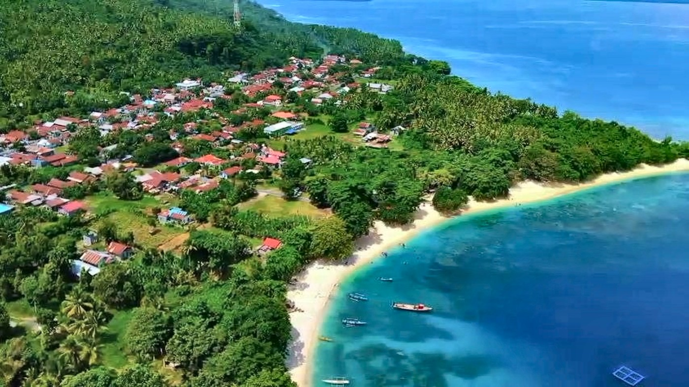
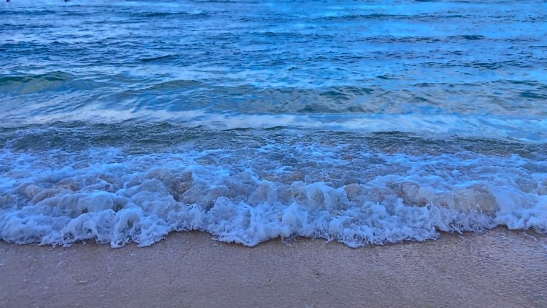
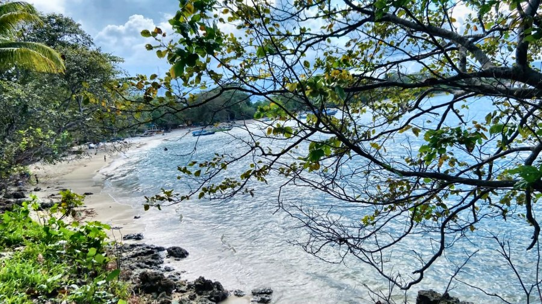
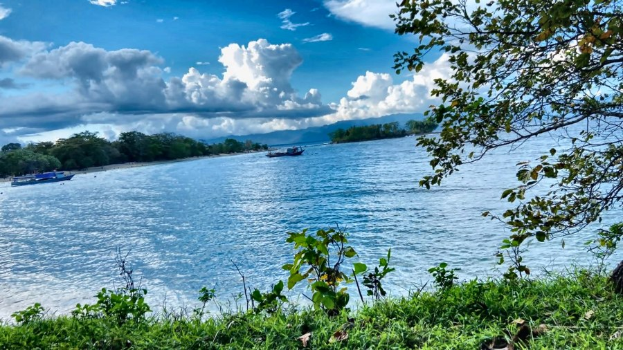
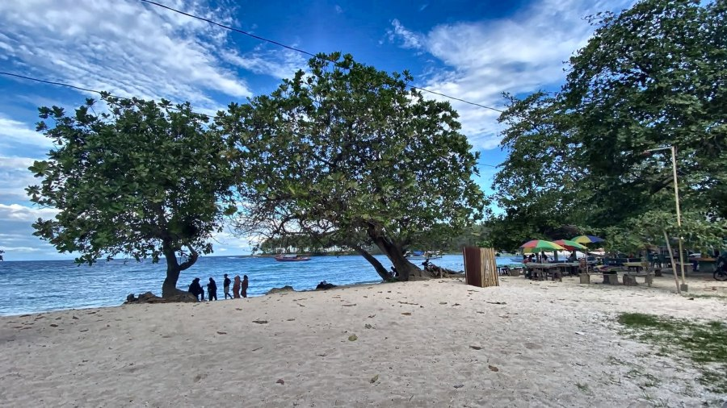
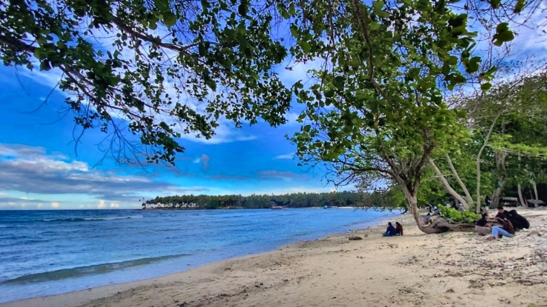
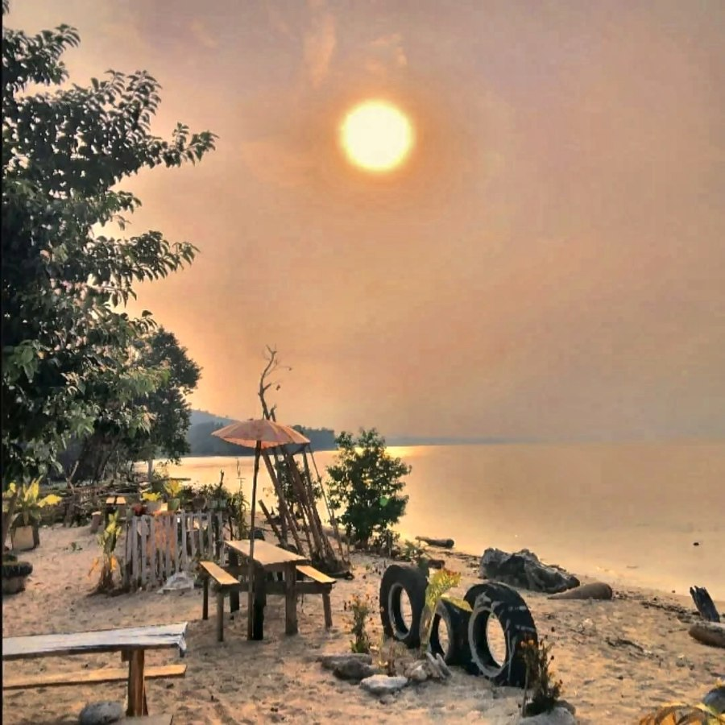

Selamat Datang di Wisata Pantai Luari
Nikmati pesona hamparan pasir putih yang halus, air laut jernih kebiruan, dan keindahan panorama alam tropis di Maluku Utara.
Profil Pantai Luari
Surga Tersembunyi di Halmahera Utara
Pantai Luari merupakan salah satu destinasi wisata bahari unggulan yang terletak di Desa Luari, Kecamatan Tobelo, Kabupaten Halmahera Utara, Provinsi Maluku Utara. Pantai ini terkenal dengan hamparan pasir putih bersih yang membentang luas serta ombak yang tenang, menjadikannya tempat ideal untuk bersantai dan berenang bersama keluarga.
Sejarah & Keberadaan
Awalnya merupakan kawasan pesisir alami warga lokal Desa Luari, kini dikembangkan secara berkelanjutan oleh masyarakat setempat dan pengelola wisata untuk memperkenalkan keindahan pesisir Maluku Utara ke ranah nasional maupun internasional.
Keindahan Alam
Pemandangan matahari terbit (sunrise) dan terbenam (sunset) yang spektakuler, perairan jernih dengan gradasi warna biru toska, serta pepohonan rindang di sepanjang pesisir pantai.
Potensi Wisata Desa Luari
Menjadi penggerak ekonomi kreatif Desa Luari melalui sektor pariwisata, kuliner khas pesisir, kerajinan lokal, serta kegiatan konservasi lingkungan pantai.

Galeri Foto Pantai Luari
Klik pada foto untuk memperbesar tampilan






Fasilitas Wisata Pantai Luari
Fasilitas pendukung yang tersedia di area pantai untuk kenyamanan Anda
Area Parkir Luas
Tersedia area parkir yang aman dan memadai untuk kendaraan roda dua (motor) maupun roda empat (mobil/bus).
Toilet & Kamar Bilas
Fasilitas toilet umum dan kamar ganti/bilas bersih setelah Anda menikmati aktivitas berenang di laut.
Tempat Istirahat
tempat duduk di bawah pepohonan rindang untuk bersantai bersama keluarga.
Warung Makan & Minum
Menyajikan aneka hidangan kuliner khas pesisir, kelapa muda segar, ikan bakar, dan makanan ringan.
Informasi Wisata
Informasi penting seputar lokasi, jam operasional, tiket, dan aturan kunjungan
Lokasi Wisata
Desa Luari, Kecamatan Tobelo, Kabupaten Halmahera Utara, Provinsi Maluku Utara.
Jam Operasional
Setiap Hari: 24/7 WIT
Jam buka dapat berubah. Hubungi Pengelola untuk kepastian jadwal.Harga Tiket Masuk
Motor: Rp.10.000
mobil: Rp.20.000
Biaya Parkir
- Motor: Sudah termasuk dengan tiket masuk
- Mobil: Sudah termasuk dengan tiket masuk
Aturan & Tata Tertib Pengunjung
Peta Lokasi Pantai Luari
Alamat Lengkap: Desa Luari, Kabupaten Halmahera Utara, Provinsi Maluku Utara
Kontak & Informasi Pengelola
Silakan hubungi pihak pengelola untuk pertanyaan, konfirmasi kunjungan, atau kerja sama
Pengelola Wisata
Masyarakat setempat
Nomor Telepon / WhatsApp
Alamat Lengkap
Desa Luari, Kecamatan Tobelo, Kabupaten Halmahera Utara, Maluku Utara